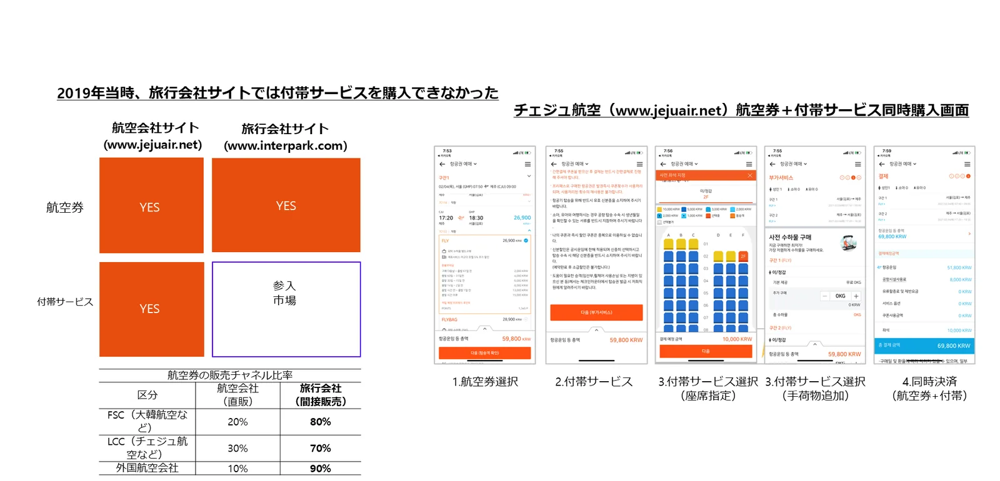

出発点：旅行会社では付帯サービスを買えなかった
航空券の多くは旅行会社で販売されています。大手航空会社は約80%、LCCは約70%、外国航空会社は約90%が旅行会社経由です。それなのに2019年まで、旅行会社のサイトでは座席指定や手荷物などの付帯サービスを購入できず、旅行者は航空会社のサイトや空港で別途購入する必要がありました。

| 区分 | 航空会社の直販 | 旅行会社の間接販売 |
|---|---|---|
| FSC（大手航空会社） | 約20% | 約80% |
| LCC（格安航空会社） | 約30% | 約70% |
| 外国航空会社 | 約10% | 約90% |
航空券の販売チャネル比率（2021年の提携提案資料より）
オールウィンエアの位置：供給元と販売先の間
オールウィンエアは、供給元（航空会社・付帯サービス事業者）と販売先（旅行会社・OTA・プラットフォーム）の間で付帯サービスを流通させます。双方はオールウィンエアに一度つなぐだけです。
供給元
- 航空会社（座席・手荷物・機内食・優先手荷物・ゴルフパック）
- 旅行付帯サービス事業者（eSIM、送迎、空港サービス、免税など）
オールウィンエア AGS
- 航空会社・NDC APIとの連携、標準変換
- 販売先ごとの表示・価格管理
- 購入画面の提供、統合決済
- 顧客CS、精算、保守
- AI座席レコメンド（PNRベース）
販売先
- 旅行会社・OTA
- 航空会社の自社チャネル
- 旅行・コマース・決済プラットフォーム
→ 旅行者は販売先の画面の中で、航空券と付帯サービスをまとめて購入します。
| 区分 | GDS（航空券の流通） | オールウィンエア AGS（付帯サービスの流通） |
|---|---|---|
| つなぐ相手 | 複数の航空会社 ↔ 複数の旅行会社 | 複数の供給元 ↔ 複数の販売先 |
| 流通商品 | 航空券の予約・発券 | 座席指定・手荷物・機内食・優先手荷物・ゴルフパック、今後はeSIM・送迎・空港サービスなど |
| 商品の特性 | 価格比較の競争が激しい | 原価率が低く価格比較の対象にならない高収益商品 |
| 運用範囲 | 予約・発券の仲介 | 連携・購入画面・決済・CS・精算・保守まで責任を持つ |

なぜ今このポジションが重要なのか
- 航空会社の収益に占める付帯サービスの比率は高まり続けています。海外の主要LCCは売上の40%以上を付帯サービスで得ています。
- 販売先は航空券の販売だけでは収益を上げにくく、付帯サービスが新たな収益源になります。
- B2Bゲートウェイは、先に接続をつくった側が標準になります。オールウィンエアはすでに韓国の航空会社7社、旅行会社・OTA13社とつながっています。
よくあるご質問
- AGS（Ancillary Gateway System）とは？
- 複数の航空会社・付帯サービスの供給元と複数の販売先をつなぎ、付帯サービスを流通させるB2Bの統合販売システムです。航空券流通のGDSに相当する付帯サービスの流通システムで、オールウィンエアが運営しています。
- GDSとオールウィンエアは競合しますか？
- いいえ。GDSは航空券の予約・発券を、オールウィンエアは航空券の後に続く付帯サービスの販売をつなぎます。販売先は既存の航空券販売の流れはそのままに、オールウィンエアを追加するだけです。
- なぜ旅行会社では付帯サービスを販売しにくかったのですか？
- 付帯サービスは航空会社ごとにシステムやルールが異なり、旅行会社は航空会社ごとに個別に連携・運用する必要があったためです。オールウィンエアがその連携と運用を一か所で代行します。
オールウィンエアとの連携を始めましょう
航空会社・付帯サービス提供事業者も、旅行会社・OTA・旅行プラットフォームも、ひとつの連携から始められます。連携方式とスケジュールは提携先の環境に合わせてご相談します。日本語・英語でのお問い合わせも可能です。
提携窓口メール（海外からはメールを推奨）partnership@allwin.co.kr
代表電話（韓国国内・平日 09:00〜18:00 KST）+82 1522-2284